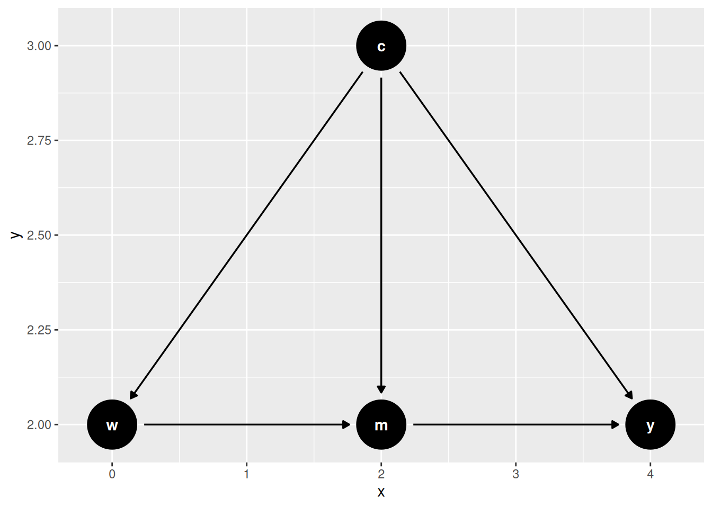

18 Causal Mediation Analysis
18.1 Classical Mediation
Traditionally mediation model can be represented in the following equations:
\[ Y = a W + b M + \epsilon_1 \tag{18.1}\] \[ M = c W + \epsilon_2 \tag{18.2}\]
That is, we’d like to study the effect of \(W\) on \(Y\), and we see the effect can be a direct effect, and an indirect effect, through \(M\).
Baron and Kenny’s (http://davidakenny.net/cm/mediate.htm) method is done in four steps. Modern approach tends to use SEM (structural equation modeling) to model these two equations directly.
lavaan 0.6-21 ended normally after 1 iteration
Estimator ML
Optimization method NLMINB
Number of model parameters 5
Number of observations 10000
Model Test User Model:
Test statistic 0.000
Degrees of freedom 0
Parameter Estimates:
Standard errors Standard
Information Expected
Information saturated (h1) model Structured
Regressions:
Estimate Std.Err z-value P(>|z|)
Y ~
X (a) 0.286 0.011 25.233 0.000
M (b) 0.699 0.010 70.384 0.000
M ~
X (c) 0.511 0.010 50.161 0.000
Variances:
Estimate Std.Err z-value P(>|z|)
.Y 0.998 0.014 70.711 0.000
.M 1.012 0.014 70.711 0.000
Defined Parameters:
Estimate Std.Err z-value P(>|z|)
bc 0.357 0.009 40.849 0.000
total 0.643 0.012 51.956 0.00018.1.1 Problems with Classical Mediation
- Lack of causal claim. We have to assume that there is no unmeasured confounder between \(M\) and \(Y\). This is a strong assumption.
- Assumption of homogeneous effect.
18.2 Causal Mediation
18.2.1 CDE
Suppose we can set \(W\) and \(M\) at will to any \((w, m)\), then we have the potential outcome \(Y(w,m)\).
Controlled direct effect (CDE) is defined as \[ CDE(m) = E[Y(1,m)-Y(0,m)] \tag{18.3}\] That is, setting \(M\) to \(m\), what is the effect of \(W\) on \(Y\)?
18.2.2 Assumptions
- Conditional treatment randomization. Suppose we observe confounders X, which can be a joint set of confounders for the W to Y pathway, or the M to Y pathway.
\[ Y(w,m) \perp W|X \tag{18.4}\]
This is the usual conditional independence (unconfoundedness, ignorability, etc.) assumption. This is saying the assignment of treatment, given covariates \(X\), has nothing to do with potential outcomes.
- Conditional mediator randomization.
\[ Y(w,m) \perp M|X, W=w \tag{18.5}\]
This is to say, within each strata of X, given treatment status, the assignment of mediator gives no information about potential outcome. This randomization is usually not implemented during many experiments (random trials). This is the assumption that makes a lot of mediation hard to make a causal claim.
- Positivity (overlap). There are two positivity assumptions:
\[ P(W=w | X=x) > 0 \tag{18.6}\] for all \(x\). This is the usual positivity assumption.
\[ P(M=m | X=x, W=w) > 0 \tag{18.7}\] for all \(x\), \(w\), and \(m\). This is the mediator positivity.
18.2.3 Estimation
CDE can be estimated using G-computation method, or IPW, or the doubly-robust methods, one of them is AIPW (augmented IPW).
18.2.4 G-computation
G-computation is to model the outcome equation: \[ \begin{aligned} CDE_G(m) &= \sum_x [ E[Y \mid W=1, M=m, X=x] \\ &\quad - E[Y \mid W=0, M=m, X=x]]\, P(X=x) \end{aligned} \tag{18.8}\]
18.2.5 IPW
IPW is to model the treatment assignment equation and the mediator assignment equation. The joint denominator factorizes sequentially – treatment given covariates, then mediator given treatment and covariates – which is the structure the estimator below relies on:
\[ \small E[Y(w,m)] = E\!\left[{\frac{I(W=w)\,I(M=m)}{g_W(w|X)\,g_M(m|w,X)}}\, Y\right] \tag{18.9}\]
Therefore,
\[ \small CDE_{ipw}(m) = E\left[\frac{I(W=1,M=m)}{g_M(m|1,X)\,g_W(1|X)}\, Y - \frac{I(W=0,M=m)}{g_M(m|0,X)\,g_W(0|X)}\, Y\right] \tag{18.10}\]
where \(g_M\) is the probability of the mediator and \(g_W\) the probability of treatment. This indicator-based form is for a discrete (here binary) mediator. For a continuous mediator the indicator \(I(M=m)\) and the probability \(g_M\) must be replaced by a conditional density (or a kernel/stochastic-intervention formulation); the estimator above does not apply as written.
18.2.6 AIPW
\[ CDE_{AIPW} = CDE_G(m) + B(\bar Q, g_M, g_W) \tag{18.11}\] where \(\bar Q\) is the mean outcome function.
\[ \begin{aligned} B(\bar Q, g_M, g_W) &= \frac{1}{n} \sum_{i=1}^{n} {\frac{I(M_i=m, W_i=1)}{g_M(m|1, X_i) g_W(1|X_i)}[Y_i-\bar Q(m,1,X_i)]} \\ &\quad - \frac{1}{n} \sum_{i=1}^{n} {\frac{I(M_i=m, W_i=0)}{g_M(m|0, X_i) g_W(0|X_i)}[Y_i-\bar Q(m,0,X_i)]} \end{aligned} \tag{18.12}\]
18.2.7 Example: G-computation
Code
set.seed(1234)
n <- 5000
# confounder of A/Y
W1 <- rnorm(n)
# confounder of M/Y
W2 <- rnorm(n)
# treatment
A <- rbinom(n, 1, plogis(-1 + W1 / 2))
# binary mediator
M <- rbinom(n, 1, plogis(-2 + A / 2 + W2 / 3))
# binary outcome
Y <- rbinom(n, 1, plogis(-1 + A - M / 2 + W1 / 3 + W2 / 3))
full_data <- data.frame(W1 = W1, W2 = W2, A = A, M = M, Y = Y)
# fit outcome regression
or_fit <- glm(Y ~ A + M + W1 + W2, family = binomial(), data = full_data)
# new data setting A and M
data_A1_M0 <- data_A0_M0 <- full_data
data_A1_M0$A <- 1; data_A1_M0$M <- 0
data_A0_M0$A <- 0; data_A0_M0$M <- 0
# predict on new data
Qbar_A1_M0 <- predict(or_fit, newdata = data_A1_M0, type = "response")
Qbar_A0_M0 <- predict(or_fit, newdata = data_A0_M0, type = "response")
# gcomp estimate of CDE(0)
mean(Qbar_A1_M0 - Qbar_A0_M0)[1] 0.251552718.2.8 Example: IPW
Code
# model for P(A = 1 | W)
ps_fit1 <- glm(A ~ W1 + W2, family = binomial(), data = full_data)
P_A1_W <- predict(ps_fit1, type = "response")
P_A0_W <- 1 - P_A1_W
# model for P(M = 0 | A, W)
ps_fit2 <- glm(M ~ A + W1 + W2, family = binomial(), data = full_data)
# P(M = 0 | A = 1, W)
data_A1 <- full_data; data_A1$A <- 1
P_M0_A1_W <- 1 - predict(ps_fit2, newdata = data_A1, type = "response")
# P(M = 0 | A = 0, W)
data_A0 <- full_data; data_A0$A <- 0
P_M0_A0_W <- 1 - predict(ps_fit2, newdata = data_A0, type = "response")
# ipw estimate of CDE(0)
mean( (A == 1) / P_A1_W * (M == 0) / P_M0_A1_W * Y ) -
mean( (A == 0) / P_A0_W * (M == 0) / P_M0_A0_W * Y )[1] 0.255309118.2.9 Example: AIPW
Code
# aipw estimate of E[Y(1,0)]
aiptw_EY_A1_M0 <- mean(Qbar_A1_M0) +
mean( (A == 1) / P_A1_W * (M == 0) / P_M0_A1_W * (Y - Qbar_A1_M0) )
# aipw estimate of E[Y(0,0)]
aiptw_EY_A0_M0 <- mean(Qbar_A0_M0) +
mean( (A == 0) / P_A0_W * (M == 0) / P_M0_A0_W * (Y - Qbar_A0_M0) )
# aipw estimate of CDE(0)
aiptw_EY_A1_M0 - aiptw_EY_A0_M0[1] 0.255426518.3 NIE and NDE: Natural Direct and Indirect Effects
CDE is to study the effect of treatment, given the level of mediator. Instead, Natural Effect is to set mediator to its natural value with the value of treatment, that is, \(M=M(w)\).
\[ \begin{aligned} ATE &= NIE + NDE \\ &= (E[Y(1,M(1))] - E[Y(1,M(0))]) \\ &\quad + (E[Y(1, M(0))] - E[Y(0,M(0))]) \end{aligned} \tag{18.13}\]
The advantage of NDE and NIE comparing to CDE is that it’s more “natural”; that is, you don’t set the level of mediator deterministically. And it can decompose the ATE into direct and indirect effects.
However, there is an additional assumption needed to identify NDE and NIE.
18.3.1 Additional Assumption
\[ Y(w, m) \perp M(w^*) | X \tag{18.14}\]
This is the “cross-world” condition: the outcome under \((w,m)\) is independent of \(M\) under \(w^*\). These two situations cannot happen in the same world; you cannot set \(W\) to both \(w\) and \(w^*\). No experiment can implement it.
This cross-world independence is additional to, not a replacement for, the usual identifying assumptions. The standard mediation formula for natural effects also requires:
- treatment ignorability (no unmeasured treatment-outcome confounding) given \(X\);
- mediator ignorability (no unmeasured mediator-outcome confounding) given \(W\) and \(X\);
- positivity for both the treatment and the mediator; and
- no treatment-induced confounding of the mediator-outcome relationship – there must be no variable affected by \(W\) that confounds \(M\) and \(Y\). (When such a confounder exists, natural effects are not identified by this formula and interventional direct/indirect effects are used instead.)
The cross-world condition by itself is not sufficient.
18.3.2 Estimation
Code
# fit outcome regression (include interaction because we can)
or_fit <- glm(Y ~ A + M + W1 + W2 + A*M + M*W1,
family = binomial(), data = full_data)
# need E(Y | A = 0/1, M = 0/1, W1 = W1i, W2 = W2i)
get_EY_a_m_Wi <- function(full_data, or_fit, a, m){
data_Aa_Mm_Wi <- full_data
data_Aa_Mm_Wi$A <- a; data_Aa_Mm_Wi$M <- m
predict(or_fit, newdata = data_Aa_Mm_Wi, type = "response")
}
EY_A0_M0_Wi <- get_EY_a_m_Wi(full_data, or_fit, a = 0, m = 0)
EY_A0_M1_Wi <- get_EY_a_m_Wi(full_data, or_fit, a = 0, m = 1)
EY_A1_M0_Wi <- get_EY_a_m_Wi(full_data, or_fit, a = 1, m = 0)
EY_A1_M1_Wi <- get_EY_a_m_Wi(full_data, or_fit, a = 1, m = 1)
# include interactions -- why not?
med_fit <- glm(M ~ A*W1 + W1*W2, family = binomial(), data = full_data)
# estimates of P(M = m | A = a, W = W_i)
get_Pm_a_Wi <- function(full_data, med_fit, a, m){
data_Aa_Wi <- full_data; data_Aa_Wi$A <- a
p <- predict(med_fit, newdata = data_Aa_Wi, type = "response")
if(m == 1){
p
}else{
1 - p
}
}
PM0_A0_Wi <- get_Pm_a_Wi(full_data, med_fit, a = 0, m = 0)
PM1_A0_Wi <- get_Pm_a_Wi(full_data, med_fit, a = 0, m = 1)
PM0_A1_Wi <- get_Pm_a_Wi(full_data, med_fit, a = 1, m = 0)
PM1_A1_Wi <- get_Pm_a_Wi(full_data, med_fit, a = 1, m = 1)
# E(E(Y | A = 1, M, W) | A = 1, W)
EY1M1_Wi <- EY_A1_M1_Wi * PM1_A1_Wi + EY_A1_M0_Wi * PM0_A1_Wi
# E(E(Y | A = 0, M, W) | A = 1, W)
EY0M1_Wi <- EY_A0_M1_Wi * PM1_A1_Wi + EY_A0_M0_Wi * PM0_A1_Wi
# E(E(Y | A = 1, M, W) | A = 0, W)
EY1M0_Wi <- EY_A1_M1_Wi * PM1_A0_Wi + EY_A1_M0_Wi * PM0_A0_Wi
# E(E(Y | A = 0, M, W) | A = 0, W)
EY0M0_Wi <- EY_A0_M1_Wi * PM1_A0_Wi + EY_A0_M0_Wi * PM0_A0_Wi
# estimate of E[Y(1, M(1))]
E_Y1M1 <- mean(EY1M1_Wi)
# estimate of E[Y(0, M(1))]
E_Y0M1 <- mean(EY0M1_Wi)
# estimate of E[Y(1, M(0))]
E_Y1M0 <- mean(EY1M0_Wi)
# estimate of E[Y(0, M(0))]
E_Y0M0 <- mean(EY0M0_Wi)
# Decomposition: ATE = NIE + NDE
NIE <- E_Y1M1 - E_Y1M0 # natural indirect effect
NDE <- E_Y1M0 - E_Y0M0 # natural direct effect
ATE <- E_Y1M1 - E_Y0M0 # total effect
cat(sprintf("NDE = %.3f\nNIE = %.3f\nATE = NDE + NIE = %.3f\n", NDE, NIE, ATE))NDE = 0.247
NIE = -0.010
ATE = NDE + NIE = 0.23818.4 IIE and IDE: Interventional Direct and Indirect Effects
People are not happy with the cross-world assumption in general. Interventional direct and indirect effects avoid it. The device is a random draw: let \(M^*_w\) denote a draw from the distribution of \(M(w)\) given \(X=x\), rather than the unit’s own \(M(w)\). The standard definitions (Vansteelandt and Daniel 2017; Díaz et al. 2021) use such a draw in every term:
\[ \begin{aligned} IDE &= E[Y(1,M^*_0)] - E[Y(0,M^*_0)] \\ IIE &= E[Y(1,M^*_1)] - E[Y(1,M^*_0)] \end{aligned} \tag{18.15}\]
The direct effect holds the mediator draw fixed at its untreated distribution; the indirect effect moves only that distribution. The two add up to
\[ IDE + IIE = E[Y(1,M^*_1)] - E[Y(0,M^*_0)], \tag{18.16}\]
the overall interventional effect. It need not equal the \(ATE\): replacing the unit’s own \(M(w)\) by a random draw breaks the within-unit dependence between \(M(w)\) and \(Y(w,\cdot)\), and that dependence matters exactly when a treatment-induced confounder \(Z\) sits between the treatment and the mediator — the situation in the example below. The payoff is identification without the cross-world assumption, even in the presence of such a \(Z\). These interventional effects are the estimands the medoutcon package implements.
18.4.1 Example
Code
library(data.table)
library(tidyverse)
library(medoutcon)
set.seed(1584)
# produces a simple data set based on ca causal model with mediation
make_example_data <- function(n_obs = 1000) {
## baseline covariates
w_1 <- rbinom(n_obs, 1, prob = 0.6)
w_2 <- rbinom(n_obs, 1, prob = 0.3)
w_3 <- rbinom(n_obs, 1, prob = pmin(0.2 + (w_1 + w_2) / 3, 1))
w <- cbind(w_1, w_2, w_3)
w_names <- paste("W", seq_len(ncol(w)), sep = "_")
## exposure
a <- as.numeric(rbinom(n_obs, 1, plogis(rowSums(w) - 2)))
## mediator-outcome confounder affected by treatment
z <- rbinom(n_obs, 1, plogis(rowMeans(-log(2) + w - a) + 0.2))
## mediator -- could be multivariate
m <- rbinom(n_obs, 1, plogis(rowSums(log(3) * w[, -3] + a - z)))
m_names <- "M"
## outcome
## (the reciprocal inside plogis is an idiosyncrasy of the medoutcon
## vignette DGP, not a standard logistic model; a zero denominator
## gives plogis(Inf) = 1, which R handles without error)
y <- rbinom(n_obs, 1, plogis(1 / (rowSums(w) - z + a + m)))
## construct output
dat <- as.data.table(cbind(w = w, a = a, z = z, m = m, y = y))
setnames(dat, c(w_names, "A", "Z", m_names, "Y"))
return(dat)
}Code
# set seed and simulate example data
example_data <- make_example_data()
w_names <- str_subset(colnames(example_data), "W")
m_names <- str_subset(colnames(example_data), "M")
# quick look at the data
head(example_data) W_1 W_2 W_3 A Z M Y
<num> <num> <num> <num> <num> <num> <num>
1: 1 0 1 0 0 0 1
2: 0 1 0 0 0 1 0
3: 1 1 1 1 0 1 1
4: 0 1 1 0 0 1 0
5: 0 0 0 0 0 1 1
6: 1 0 1 1 0 1 0Code
# A tibble: 1 × 7
lwr_ci param_est upr_ci var_est eif_mean estimator param
<dbl> <dbl> <dbl> <dbl> <dbl> <chr> <chr>
1 -0.170 -0.0708 0.0281 0.00254 1.12e-16 onestep direct_interventionalCode
# A tibble: 1 × 7
lwr_ci param_est upr_ci var_est eif_mean estimator param
<dbl> <dbl> <dbl> <dbl> <dbl> <chr> <chr>
1 -0.169 -0.0679 0.0332 0.00266 0.0210 tmle direct_interventional